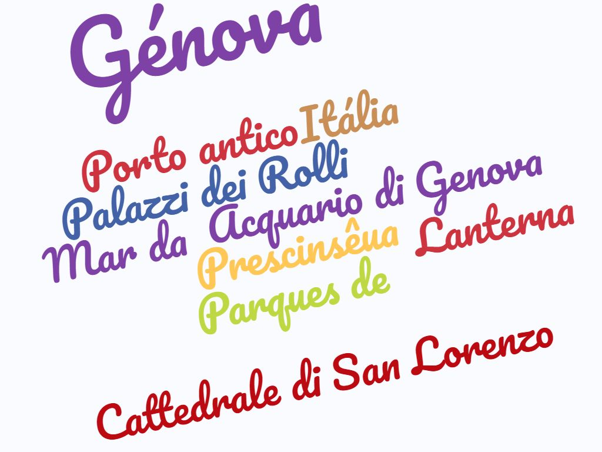

🌞 Génova 🌞

Quizz | Comentário | Home | Introdução | Localização | Informação | Multimédia
Introdução
Génova é uma 🏙️ italiana com cerca de 639'560 👪 e tendo uma superficie de 242km2 tendo uma zona portuária sendo a mas ativa do país sendo também a quinta maior cidade da Itália. A cidade é um lugar alegre e aconchegante , é otimo para quem procura uma Itália romântica e sendo um lugar com otima 🍕 🍟 🍰 deixando uma pessoa 😍 pela 🏙️.
A cidade de Génova encontra-se na costa norte da Itália, sendo um excelente lugar para passar uma ferias relaxantes, aproveitando para saborear a comida local que deixa agua na boca so de pensar nela. Não sendo um local muito conhecido devido ao seu acesso facil, é um lugar que contém lugares maravilhosos como o centro histórico, o Porto Antigo, como Portofino entre outros lugares fantasticos que esconde a cidade. Se quiser experimentar viagem como novas experiencias e descobrir lugar fantasticos visite Génova
Estrutura do Website:
- Quizz sobre a cidade de Génova: Quizz
- Fazer um Comentário: Comentário
- Ver outros laboratórios: Home
- Localização de Génova: Localização
- Descoberta de Genova com um video Multimedia
- Ir para a pagina principal: Pagina Principal
- Descobrir mais informação: Informação
